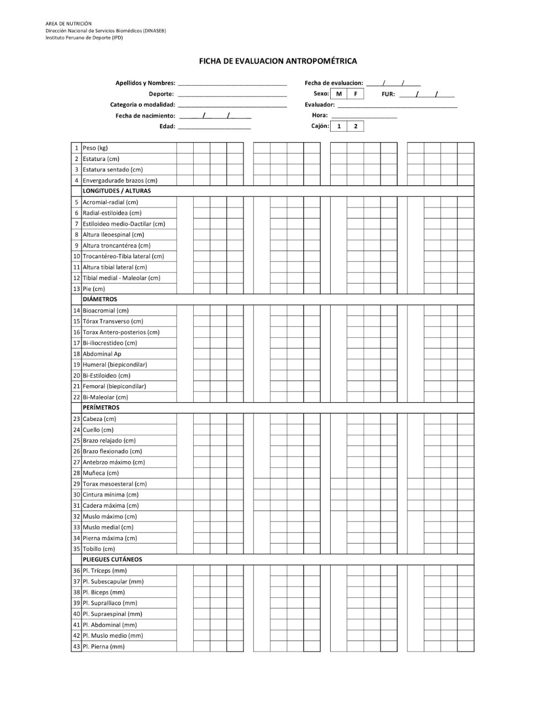
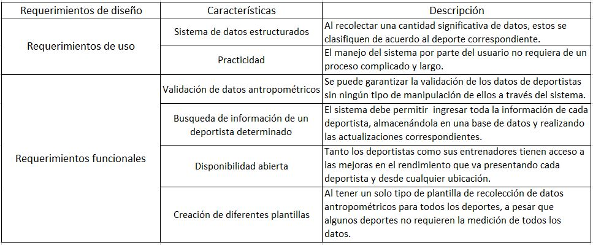

1. ESTADO DEL ARTE
1.1. ANTROPOMETRÍA DEPORTIVA
1.2.PERFIL ANTROPOMÉTRICO
Según ISAK existen dos perfiles usados mayormente para la valoración antropométrica, el restringido (17 mediciones) y el completo (42 mediciones). El perfil restringido es un subgrupo del perfil completo. Las mediciones están clasificadas en 5 categorías: básicas, pliegues, perímetros, longitudes y anchos.
1.2.1. PERFIL RESTRINGIDO
La medición de estos sitios permitirá hacer el cómputo del somatotipo, proporcionalidad, grasa corporal relativa (usando un restringido número de ecuaciones de regresión), índices de áreas de superficie del cuerpo, índice de masa corporal, cociente cintura cadera, patrón graso, y perímetros corregidos por pliegues.
1.2.2. PERFIL COMPLETO
Las medidas de los sitios abarcados en el perfil completo permiten hacer cálculos adicionales tal como la estimación de la grasa corporal (utilizando un extenso número de ecuaciones de predicción), y cálculo de masas ósea, muscular, adiposa y residual usando las técnicas del fraccionamiento de la masa corporal. También el cálculo de masa esquelética y músculo esquelética por varios métodos.

Figura 1. Mediciones antropométricas del manual ISAK. (Sitios incluidos en el perfil antropométrico (2017).Normas Internacionales para la Valoración Antropométrica. 2019, de ISAK)

Figura 2. Ficha de evaluación antropométrica del DINASEB.
1.3 FRACCIONAMIENTO DE LA MASA CORPORAL EN 5 COMPONENTES
1.5. SOLUCIONES EXISTENTES
1.5.1. APLICANDO LAS TECNOLOGÍAS DE INFORMACIÓN PARA LA GESTIÓN DE DEPORTISTAS DE ALTO RENDIMIENTO
En este proyecto realizado por cuatro estudiantes de la Facultad de Ingeniería Mecánica y Eléctrico de la Universidad de Colima (México) presenta el desarrollo de un software para la gestión de deportistas basado en estudios antropométricos. Por un lado, se encuentra la migración del software a una aplicación web con su componente de inteligencia artificial que funcione como un asistente virtual, el cual analice los datos relacionados con los deportistas en una base de datos. Además, otro objetivo de este proyecto es utilizar la información antropométrica de cada deportista para tomar decisiones en aspectos relacionados con alimentación, entrenamiento; así como los avances del deportista.
Debido a que este proyecto es la mejora de un sistema desarrollado y piloteado en la Universidad de Colima utilizado desde el 2009, cuyo software se desarrolló para un sistema de bajo entorno de área local diseñado y programado por Visual Basic 6.0 y utilizando una base de dato Access. Se decidió mejorar el diseño de base de datos, configuración de software y las interfaces de usuario para la nueva versión del sistema.
La operación de este sistema inicia cuando el deportista realiza tanto el examen médico como el test psicológico, posteriormente entrará a una etapa de evaluación, para ver si es aceptado o no. En caso de ser aceptado, el entrenador le indicará al deportista a que deporte ingresará y sus datos personales. Como se puede visualizar en la imagen, solo el entrenador será el que podrá hacer modificaciones y actualizaciones en el sistema, desde los entrenamientos hasta la alimentación, y podrá ver los avances y desempeño de sus deportistas. Mientras que el deportista solo podrá ingresar al sistema en línea a través del sitio web de la Universidad de Colima para consultar sus entrenamientos, alimentación y avances sin ninguna modificación.
Figura 1. Caso de uso del sistema de deportistas de natación.
()
El diseño de base de datos consta de cuatro tablas: Antropometría, Deporte, Entrenamiento y Deportista. Cada tabla de la base de daros presenta una clasificación, lo cual favorece a un acceso rápido de la información.

Figura 2.Base de datos optimizada con sus respectivos tablas.
()
Para la construcción de la aplicación web se empleó el lenguaje HTML. Además, se realizó un diseño de la estructura del sistema mediante wireframes, para lo cual se utilizó la herramienta Balsamiq. Adicionalmente se utilizó otra herramienta para el diseño de las interfaces de usuario mediante un esquema IU/UX denominada Axure con la finalidad de que la interacción del usuario con el software sea lo más amigable posible. Con los wireframes generados se generó nuevas interfaces de usuario las cuales permitieron un mejor manejo de la información. Como se puede ver en las figuras, el entrenador hace registro de información del sistema; además de llevar el control médico de sus deportistas. Y genera el reporte físico de cada deportista con sus respectivos datos antropométricos.

Figura 3.Entenador-registro de deportistas.
()

Figura 4.Entrenador-control médico.
()

Figura 5.Entrenador-registro físico datos antropométricos.
()
1.5.2.
2. REQUERIMIENTOS DE DISEÑO
Tabla 1
Requerimientos de diseño.

Tabla 2
Requerimientos médicos.